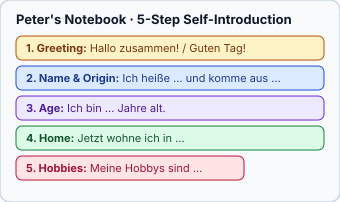

Steckbrief: Sich in der Klasse vorstellen
Mit einem KI-Tutor lernen
Ein KI-Tutor erklärt dir diese Seite und hilft dir bei den Aufgaben. Wähl deinen Assistenten:
Mit Claude öffnen Mit ChatGPT öffnen Mit Mistral Vibe öffnen
Du nutzt dein eigenes Konto beim Anbieter. Der Assistent ist kein Angebot von lernapps.net: lernapps liefert nur Inhalte und Aufgaben. Die Wahl gilt für alle Seiten, nur auf diesem Gerät.
Vorstellungsrunde in Klasse 6
Erster Schultag in Klasse 6! Klassenlehrer Herr Braun startet eine kurze Steckbrief-Runde mit Lukas, Nadia und Peter. Bringe zuerst Nadias Sätze in eine gute Reihenfolge!
Aufgabe
Lösung
Richtige Antwort: 1. Hallo zusammen!, 2. Ich heiße Nadia und komme aus Deutschland., 3. Ich bin 12 Jahre alt und wohne in Lindenberg., 4. Mein Hobby ist Schwimmen.
Starte mit einer Begrüßung, nenne dann Name, Herkunft, Alter und Wohnort, und schließe mit deinem Hobby ab.
Peters 5-Schritte-Steckbrief

© CC0-1.0Peters Lindenberg-Heft: der klare Leitfaden für deine Vorstellung.
So stellt sich Peter in der Klasse vor
„Hallo zusammen! Ich heiße Peter Taylor und komme aus England. Ich bin 12 Jahre alt. Jetzt wohne ich in Lindenberg nahe dem Marktplatz. Meine Hobbys sind Fußball und Musik.“
| Deutsch | Englisch |
|---|---|
| wohnen (ich wohne) | to live (I live) |
| sprechen (ich spreche) | to speak (I speak) |
| Englisch / Deutsch | English / German |
| das Hobby / die Hobbys | the hobby / the hobbies |
| der Fußball / die Musik | football / music |
Sätze sicher bauen
Aufgabe
Lösung
Ich bin 11 Jahre alt. richtige Antwort
Mit „Jahre“ steht im Deutschen immer „alt“ am Ende.
Ich habe 11 Jahre.
Im Deutschen benutzt man beim Alter „bin“ (sein), nicht „habe“.
Ich bin 11 Jahre.
Hier fehlt das Wort „alt“ am Satzende.
Merke: „Ich bin 11.“ oder „Ich bin 11 Jahre alt.“ – immer mit „bin“!
Aufgabe
Ergänze Lukas' Vorstellung in der Klasse.
Tipp
Achte auf die Verbendung -e bei „ich“ und auf Großschreibung bei Nomen.
- I live in Lindenberg. → Ich … in Lindenberg.
- My hobbies are music and football. → Meine … sind Musik und Fußball.
- I speak English and German. → Ich … Englisch und ….
Lösung
- Ich wohne in Lindenberg.
- Meine Hobbys sind Musik und Fußball.
- Ich spreche Englisch und Deutsch.
Nach „ich“ enden regelmäßige Verben im Präsens auf -e: ich wohne, ich spreche, ich komme.
Aufgabe
Schreibe zwei kurze Vorstellungssätze für Mina (9, wohnt in Lindenberg).
Tipp
Nutze „Ich bin … Jahre alt“ für das Alter und „Ich wohne in …“ für den Wohnort.
- I am 9 years old.
- I live in Lindenberg.
Lösung
- Ich bin 9 Jahre alt. (auch richtig: Ich bin neun Jahre alt.)
- Ich wohne in Lindenberg. (auch richtig: Ich lebe in Lindenberg.)
Kapitel 1 geschafft! Du kannst jetzt grüßen, du und Sie unterscheiden, Formulare ausfüllen und dich frei vorstellen. In Kapitel 2 geht es in Lindenberg um Zahlen, Preise, Uhrzeiten und Schule.
Fehler gefunden oder eine Idee für diese App?